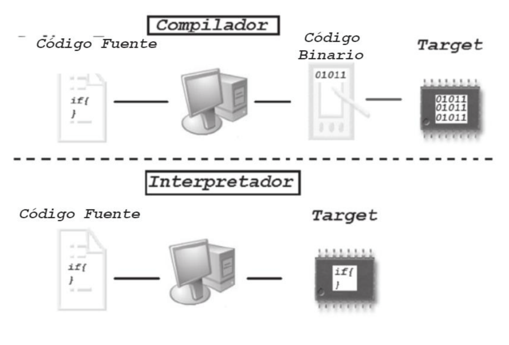
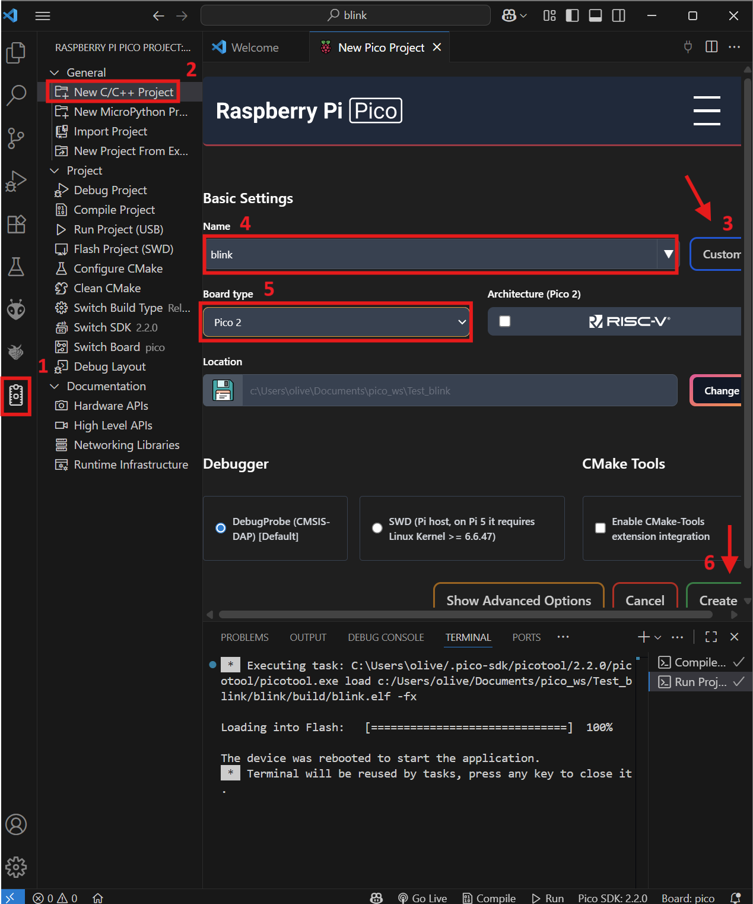
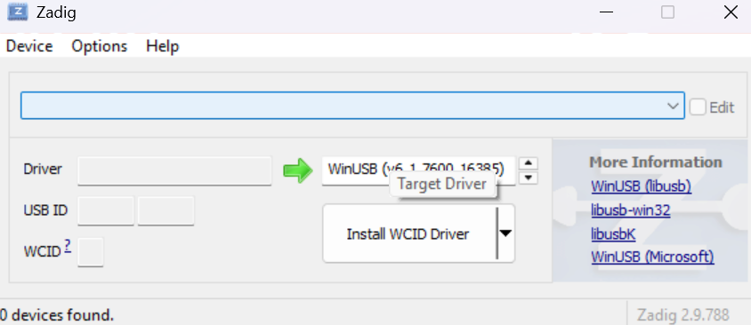

Entorno y Toolchain
Conceptos base
Lenguajes de alto, bajo y nivel intermedio
- Bajo nivel: cercanos al hardware, poca abstracción. Ej.: ensamblador. Control fino de registros y memoria; máxima dependencia de la arquitectura.
- Alto nivel: mucha abstracción (tipos complejos, manejo automático de memoria, librerías ricas). Ej.: Python, Java, C#.
- Nivel intermedio (también llamado nivel medio): balance entre control de hardware y abstracción. Tradicionalmente se ubica aquí C (permite acceso directo a memoria y, a la vez, estructuras y funciones portables).
Compilar e Interpretar
- Compilar: traducir el código fuente a código máquina nativo (o a ensamblador/objeto intermedio) antes de ejecutar. El resultado es un binario para una arquitectura/ABI específicas. Puede incluir enlazado, optimización y símbolos de depuración.
- Interpretar: ejecutar el programa leyendo instrucciones del código fuente (o de un bytecode) y realizando acciones durante la ejecución, sin producir un binario nativo completo por adelantado.
- JIT (Just-In-Time): punto medio. El intérprete compila en tiempo de ejecución los fragmentos “calientes” a nativo para acelerar.

| Aspecto | Compilado (Ahead of Time AOT) | Interpretado | JIT |
|---|---|---|---|
| Momento de traducción | Antes de correr | Durante la ejecución | Durante, por partes |
| Binario nativo | Sí | No (o parcial) | Parcial/temporal |
| Rendimiento típico | Alto y estable | Menor, depende del intérprete | Sube con el calentamiento |
| Portabilidad | Menor (por arquitectura) | Alta (un intérprete por plataforma) | Alta, con coste de complejidad |
| Tiempo de arranque | Rápido | Rápido (si no compila) | Puede tardar en “calentar” |
| Depuración | Con símbolos y GDB/LLDB | A menudo con REPL y trazas | Mezcla: profiler + depurador |
De codigo a silicio
Compilado (Ahead of Time AOT)
- Preprocesado: expandir #include y macros, quitar comentarios/condicionales, para obtener un código limpio.
- Análisis y parseo: leer tokens, validar sintaxis y construir una representación interna AST/IR (árbol o representación intermedia).
- Optimizacion: aplicar mejoras independientes de la arquitectura (inlining, eliminar código muerto, etc.).
- Seleccion de instrucciones y registros: traducir el IR a código para la ISA destino y asignar registros/pila. Obteniendo un ensamblador o codigo máquina.
- Ensamblado: Convierte el ensamblador a objeto relocable (.o).
- Enlazado: Combina objetos/bibliotecas, resuelve símbolos y genera el binario final.
- Carga (loader/bootloader): colocar el binario en memoria y saltar al punto de entrada, para ejecutar.
Interpretado
- Análisis y parseo del fuente: leer tokens, validar sintaxis y preparar una forma interna navegable.
- Inicialización del entorno de ejecución: preparar espacios de nombres, stack de llamadas, heap y cargar bibliotecas estándar del lenguaje.
- Bucle del intérprete (evaluación): recorrer el AST (o estructura equivalente) nodo por nodo y ejecutar sus acciones (expresiones, sentencias, control de flujo).
- Gestión de funciones y llamadas externas (FFI) — opcional: permitir que el código interpretado invoque primitivas nativas (E/S, tiempo, sockets) a través del runtime.
- Depuración y trazas: instrumentar la ejecución con REPL, tracebacks, logging y puntos de interrupción a nivel fuente.
- Finalización: liberar recursos del runtime y reportar estado de salida.
Términos Comunes
- IR / AST*: representaciones internas del programa que facilitan análisis y optimización.
- Enlazador (linker): une objetos/bibliotecas y resuelve símbolos → binario final.
- Loader/bootloader: coloca el binario en memoria y transfiere el control al programa.
- ISA: conjunto de instrucciones de la CPU (define cómo debe generarse el código).
- ABI: reglas binarias (llamadas, registros, layout) para que objetos/bibliotecas encajen.
- Objeto relocable (.o): código ya ensamblado pero sin direcciones finales (previo al enlazado).
- Símbolos de depuración: metadatos que relacionan direcciones con líneas/variables (clave para depurar).
- Toolchain: conjunto de herramientas (compilador, enlazador, etc.) para construir el software.
Plataforma y entorno con VS Code
Arquitectura objetivo
La Pico 2 monta el RP2350, que permite elegir una de estas rutas de compilación:
graph TD
A[RP2350] -->|Opción recomendada| ARM[Cortex-M33]
A -->|Opción secundaria| RISCV[RISC-V Hazard3]Nota
La opción recomendada (Cortex-M33) ofrece un mejor rendimiento y soporte, mientras que la opción secundaria (RISC-V Hazard3) puede ser útil para experimentación o compatibilidad con otros proyectos.
Instalacion y Configuracion
-
Instala VS Code
-
Abre VS Code, ve a extensiones y busca e instala "Raspberry Pi Pico".

- Crea un proyecto base.
- En la Barra lateral seleccion el simbolo de "Raspberry pi pico project"
- Selecciona nuevo proyecto C/C++
- Da clic en el boton para cambiar a plantillas ejemplo
- Selecciona la Plantilla "Blink"
- Selecciona el tipo de placa que tienes
- Da clic en "Crear Proyecto"

- Compila y carga el programa en la placa.
- En la barra lateral izquierda selecciona el archivo principal blink.c.
- Haz clic en el botón de "Compilar" .
- Espera a que la compilación termine sin errores, y verifica que se haya creado un target file UF2.
- Conecta tu placa verificando que aparezca como dispositivo USB RPI-RP2. Para programarlo arrastra el UF2 a la unidad correspondiente o haz clic en el botón de "Cargar" .

Error de carga
En caso de que aparezca el error No accessible RP2040/RP2350 devices in BOOTSEL mode were found. acompañado de Device at bus 1, address 7 appears to be a RP2040 device in BOOTSEL mode, but picotool was unable to connect descarga y corre zadig, selecciona RP2 Boot (Interface 1) y selecciona WinUSB y dale clic a instalar driver.

Primer Codigo
Codigo minimo para un blink
#include "pico/stdlib.h"
int main(void) {
const uint led = PICO_DEFAULT_LED_PIN;
gpio_init(led);
gpio_set_dir(led, GPIO_OUT);
while (true) {
gpio_put(led, 1);
sleep_ms(250);
gpio_put(led, 0);
sleep_ms(250);
}
}
Descripcion de partes
#include "pico/stdlib.h": Incluye la biblioteca estándar de Pico, que proporciona funciones para interactuar con el hardware.int main(void): Punto de entrada de la aplicación, En embebidos, el startup code inicializa memoria y llama amain.const uint led = PICO_DEFAULT_LED_PIN;: -constprotege contra reasignaciones accidentales. -uint: entero sin signo (un GPIO no es negativo). Alternativa fija: uint32_t.PICO_DEFAULT_LED_PIN: constante que representa el pin LED predeterminado de la placa.
while(true): Bucle infinito que mantiene el programa en ejecución.